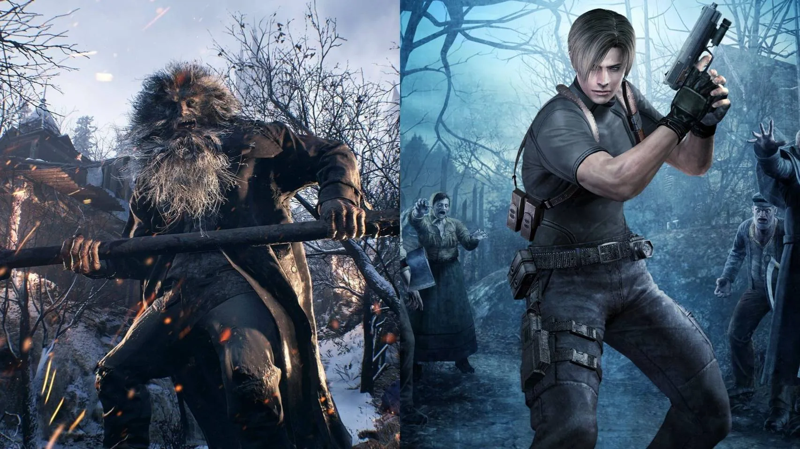

Noticias recientes

Resident Evil 8 Village: Sus creadores explican cómo se han inspirado en Resident Evil 4
IGN ha tenido la oportunidad de charlar con Morimasa Sato,
el director de Resident Evill 8: Village, la próxima y esperada
entrega de esta popular saga de aventuras de terror y acción, y
Tsuyoshi Kanda, su productor quienes han explicado las diferentes
inspiraciones que el equipo de desarrollo ha tomado de Resident
Evil 4, uno de los juegos más laureados y revolucionarios de la serie.
Según comenta Sato, el desarrollo del título comenzó el 8 de agosto de 2016, es decir,
seis meses antes de que Resident Evil 7 llegase a las tiendas, por lo que no tenían muy claro cómo iba
a funcionar entre el gran público la propuesta de dicho juego y su nueva cámara en primera
persona, por lo que no fue hasta que se estrenó y disfrutó de gran éxito de crítica y público que se
decidieron a hacer de Village una secuela directa de la aventura de Ethan Winters, conservando
tanto a su protagonista como la nueva perspectiva.
Top 1 juegos 2021

Disco Elysium: The Final Cut
Disco Elysium: The Final Cut es la versión definitiva del RPG a cargo
de ZA/UM para PC, PlayStation 4, PlayStation 5, Xbox One, Xbox Series,
Switch y Stadia con nuevas misiones y doblaje para todos los personajes.
Los jugadores del título original en PC tendrán la nueva versión de
forma gratuita.
Lo primero que sorprende de Disco Elysium es la libertad de acción que ofrece
apoyándose exclusivamente en su formidable narrativa. No hay combates ni escenarios
especialmente grandes con un diseño laberíntico en los que perderse en busca de
pistas. La esencia de esta aventura es la investigación y las conversaciones;
explorar y charlar. Lo que dicho así suena muy simple, pero no lo es en absoluto
por cómo la historia y el mundo que nos rodea cambian con todas y cada una de nuestras
decisiones, a veces de formas tan inverosímiles como geniales. Este ritmo de la acción
tan pausado parece idóneo para el control con mando, pero lo cierto es que no he
terminado de sentirme cómodo.